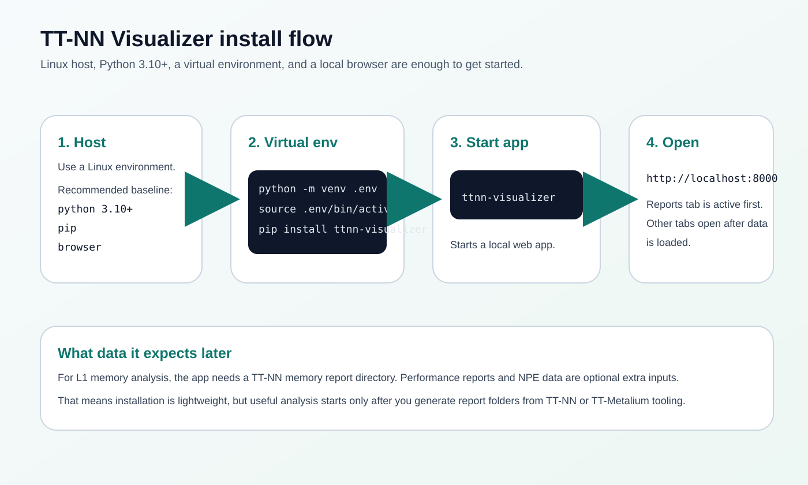

TT-NN Visualizer Installation Manual
Install the tool, prepare optional SSH access, and generate the report folders that the app needs for useful analysis.
Install
python3 -m venv .env source .env/bin/activate pip install ttnn-visualizer ttnn-visualizer
Then open http://localhost:8000.

Optional SSH Preparation
eval "$(ssh-agent -s)" ssh-add ~/.ssh/id_rsa
Only do this if you plan to sync report folders directly from a remote machine.
Generate The First Memory Report
export TTNN_CONFIG_OVERRIDES='{
"enable_fast_runtime_mode": false,
"enable_logging": true,
"enable_graph_report": false,
"report_name": "my_visualizer_run",
"enable_detailed_buffer_report": true,
"enable_detailed_tensor_report": false,
"enable_comparison_mode": false
}'
Run your TT-NN model after setting this, then load the resulting folder from generated/ttnn/reports/.

Local Or Remote Loading